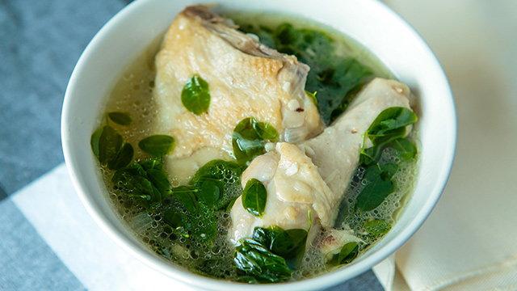

|  | TinolaThis is a easy one-pot dish from the Philippines. It contains meat and vegetables all cooked together in one savory dish. |
Ingredients2 tbsp vegetable oil 3 cloves garlic, crushed 1 small onion, chopped 2 tbsp ginger, chopped 3-4 lb chicken, cut in peices 2 tbsp patis (fish sauce) 4 cups water 1 green papaya, peeled and cubed 1 1/2 cups pepper leaves or spinach |
|
| <<< Back to Main Dish | |